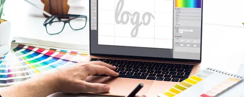

Création de site web et Mini-site
Site vitrine professionnel, rapide et optimisé Google, Mini Site vitrine simple et efficace

Google Business
Création & optimisation complète

Google Maps
Meilleur positionnement local

Avis clients
Plus d’avis, plus de confiance
Rédaction de contenu
Création de contenus professionnels optimisés pour votre site web

Création de logo
Logo professionnel moderne adapté à votre activité
Design graphique
Visuels, supports marketing et identité visuelle complète
Maintenance informatique
Assistance, dépannage et maintenance pour professionnels